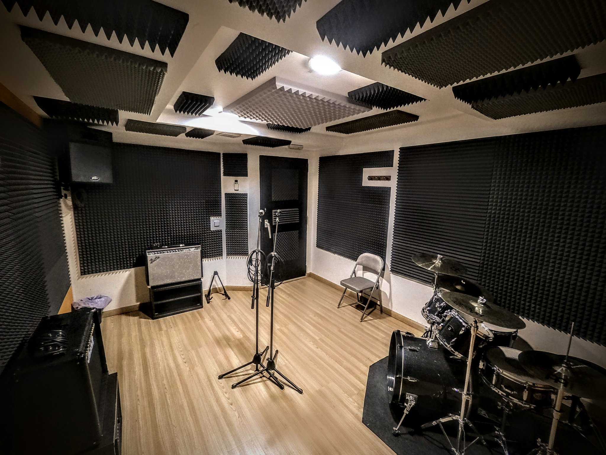

Sala preparada per assajos de grups petits, proves de so i sessions de pràctica. Disposa d'espai per col·locar bateria, guitarres, baixos, micròfons i amplificadors sense saturar la sala. És una opció còmoda per bandes que necessiten una reserva ràpida i un entorn controlat.
Horari de reserva: dilluns a dissabte, 08:00–20:00. Diumenge tancat.

0–5 instruments
12 €/h
Reserva mínima recomanada: 1 hora.
Assaig, pràctica, prova de so i preparació de sessió.